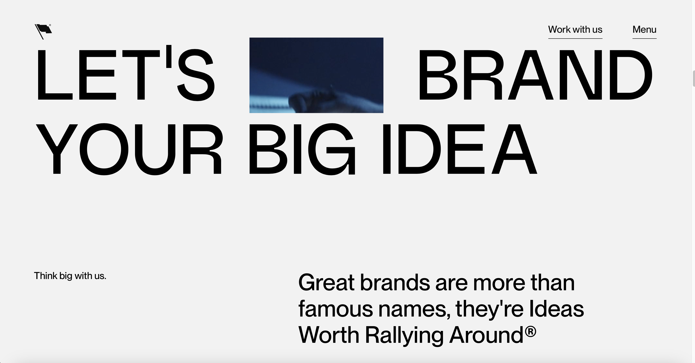
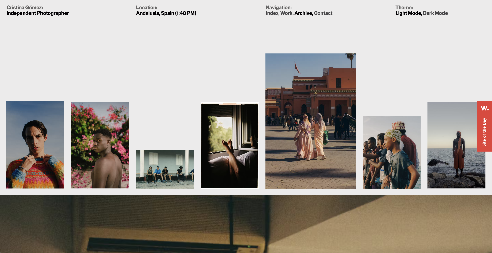
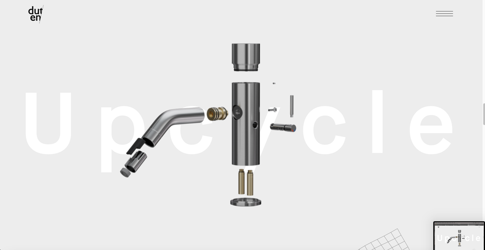
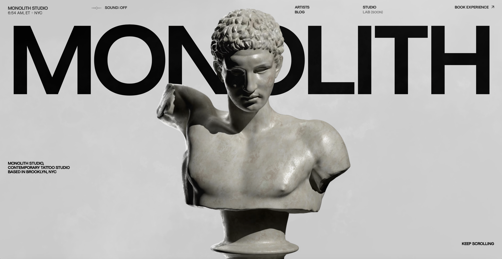
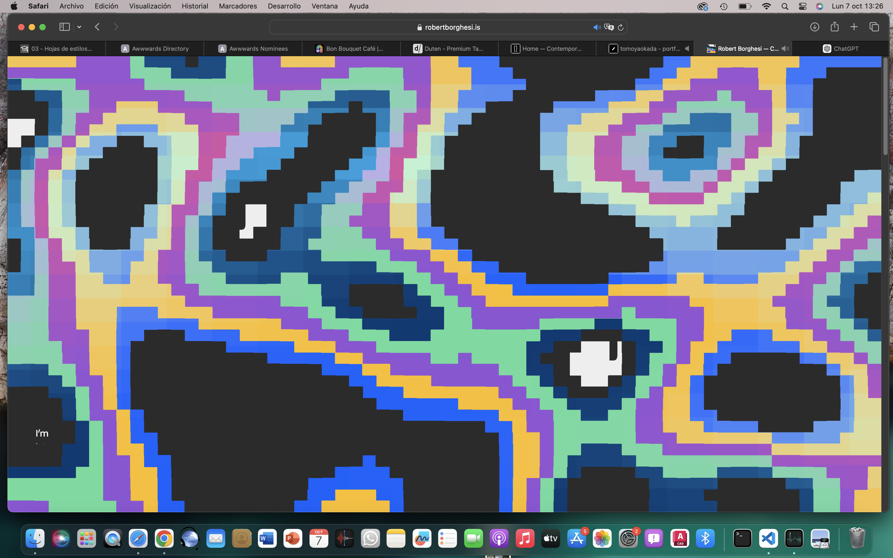

Aquí encontrarás una selección de sitios web excepcionales, divididos en categorías para facilitar tu búsqueda. Navega por nuestras categorías y descubre sitios web que destacan por su calidad, utilidad e innovación.
CATEGORÍAS
Claridad y Usabilidad
Retro Tale es una web creada por Digital Fans y Barkas. Destaca por su estilo minimalista que muestra todas sus opciones de manera clara.

Motto es una web creada por Motto e Ingamana. Utiliza una tipografía sin serifas de gran tamaño sobre un fondo blanco que facilita la compresión del usuario.

Cristina Gómezes una web creada por Cris Gómez, Alex Tkachev, You know who made it y Surya Aditya. Sigue una estética minimalista que muestra fotografías junto a texto de manera muy clara, limpia y ordenada.
Bon Bouquet café, es una web creada por Bon Bouquet Café. Incorpora unas ilustraciones animadas que van moviédose en circulos mientras el usuario se encuentra en la página de inicio.

Duten, creada por Incredibles, Oliver Guilleux, Sebastien-Salord y Antoine Wodniack. A medida que el usuario va navegando por la web aparecen animaciones que muestran poco a poco el despiece de los productos.

Monolith Studio, cuyos creadores son Artemi Lebedev y Okanuckun. Introducen una misma ilustración animada de una estatua que a medida que el usuario avanza se va moviendo por toda la pantalla.

Robert Borguesi Portfolio, creada por Robert Broguesi. En el inicio de la web el usuario debe clicar para acceder a la web mientras aparacen una ilustración creada a partir de pixels y música.
3D Mover es una web creada por Noomo Labs. El usuario debe seguir una serie de indicaciones que hacen que la web avance mientras tiene una experiencia inmersiva con las animaciones de la web.
The future of XR, creada por Noomo Agency. Dependiendo de las acciones del usuario y de donde posicione el puntero se ven ciertas imágenes o animaciones en la web.